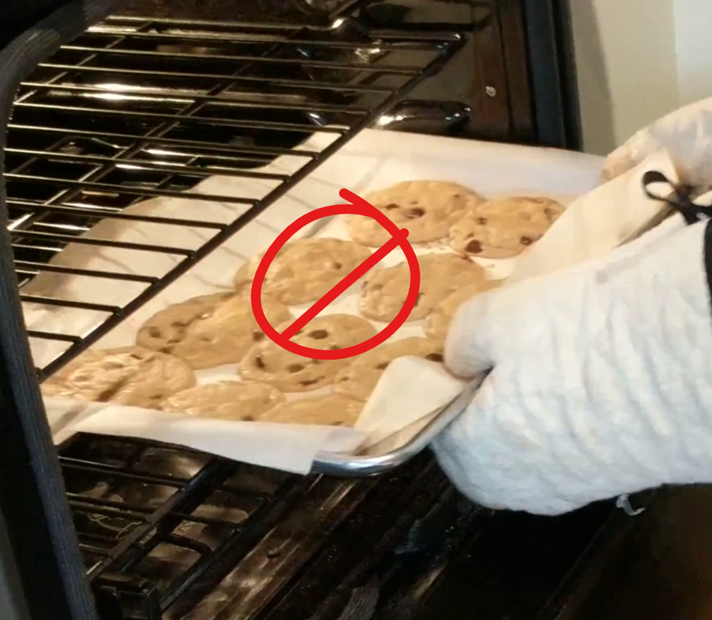
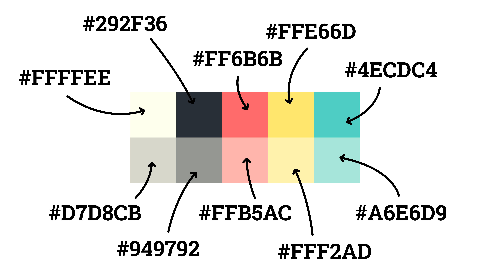
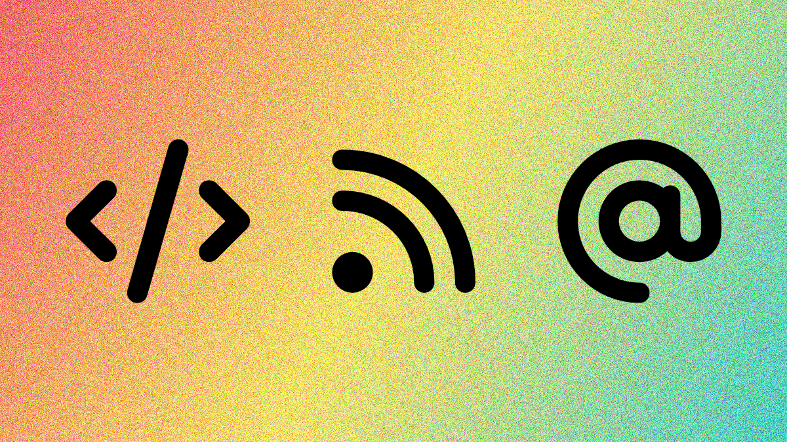

Hey there! Welcome to my website, I’m so glad you stopped by. Around here I go by
Obsidian_Seal, enjoyer of — among other things — programming, graphic design, typography,
transportation,
puzzles, games, and
LEGO. You’ll find all
that and more, right here on THE PINNIPED PAGE: a collection of
boredom-busting games,
useful tools, and other
random thoughts or
fun ideas.
This website was first deployed
to the internet on November 28th, 2020.
Over the years I have slowly added more and more, turning it into
something I’m truly proud of.
why “pinniped.page”
The word “pinniped” collectively refers to seals, sea lions, and walruses,
all of which are technically seals, my favourite animals. All the good seal domains were either taken or way outside my budget, so I looked instead for domains that used the word
pinniped. The one I chose (pinniped.page) was short, relatively inexpensive, and best of all, alliterative. The only
downsides are that people don’t know how to spell it and aren’t familiar with .page domains. Hopefully
this can be rectified!")
why “Obsidian_Seal”
Back in 2017, when I created my Minecraft account, I combined those two words into what I believe is a worthy username. Since then, I have used it
nearly everywhere, and I hope to continue using it forever.
Seals have been
my favourite animals for as long
as I can remember, so I wanted to include them in my username. Then, if I recall correctly, I wanted something from Minecraft as the first word and I
decided that obsidian sounded best.
While we’re talking about Minecraft, I should mention that this website’s logo (the seal
face, below) is from the Minecraft skin that I have been using since
I designed it in 2018.
how it’s made
I wrote a pretty detailed blog post about everything that goes on behind-the-scenes around here. You should go read it.
cookies & privacy policy
I have imposed a strict no-cookie policy on the pinniped.page. This means that I will never save data to your
computer, at the cost of functionality.

However, some of the
services used by this website, like
Font Awesome, might use cookies. Check out the services’
websites to learn more.
I collect no information about visitors to my website. Please do not enter any personal information into any form
fields as data is not saved securely.
If you have questions or concerns about any of this, feel free to reach out through the
Contact page.
design system
You should be able to tell which pages use the main.css stylesheet because they look very similar to this one. Great
effort has been put into making the pinniped.page unique, elegant, and consistent across all of its many pages.
However, because I use Google Chrome to work on my website, some things may look completely different in other web browsers. Explained below are the
core elements of the main pages’ design.
COLOUR
The colour palette I use was originally generated by
Coolors, but I have expanded it with lighter shades of each colour. The
three accent colours are used to make the three sections of the pinniped.page distinct. Pages pertaining to
Projects have teal accents,
Blog-related pages use red accents, and the information trilogy (About,
Status, and
Contact) has yellow accents. Any page can, however, use any colour for
emphasis, like how the Status page uses teal and red to represent good and
bad.

TYPOGRAPHY
Abril Fatface
for headings and
Roboto Slab
for body text. They’re awesome, no further discussion necessary.
The width (measure) of blocks of text (like this one) was determined
to provide the best readability.
ICONS
Speaking of awesome,
Font Awesome! I use their icons everywhere because I love how
they look and because I pay for them and need
to get my money’s worth. But seriously, they are incredibly useful.

RIGIDITY
This is a bit difficult to explain.
Some websites give me the sense that the elements on the page
aren’t fully attached, like they might disappear or break at any moment. Perhaps it’s an unusual hover effect, strange alignment, visual
inconsistency, or weird movement. Perhaps I’m just crazy. But I can guarantee there will be none of that here! All the elements on the
pinniped.page are carefully crafted and firmly affixed.
connections
- Autodesk / Obsidian_Seal
- Beat Saber / Obsidian_Seal
- Behance / Obsidian Seal
- BrickLink / Obsidian_Seal
- Chess.com / Obsidian_Seal
- Codecademy / Obsidian_Seal
- CodePen / Obsidian_Seal
- Discord / Obsidian_Seal
- Duolingo / Obsidian_Seal
- eBay / obsidian_seal
- GeoFS / Obsidian_Seal
- GeoGuessr / Obsidian_Seal
- GitHub / Obsidian_Seal
- Kickstarter / Obsidian_Seal
- Letterboxd / Obsidian_Seal
- MATLAB / Obsidian_Seal
- Microsoft Learn / Obsidian_Seal
- Minecraft / Obsidian_Seal
- Monkeytype / Obsidian_Seal
- Pexels / Obsidian_Seal
- Planet Minecraft / Obsidian_Seal
- Riot Games / ObsidianSeal#2222
- SoundCloud / Obsidian_Seal
- SpigotMC / Obsidian_Seal
- Spreadshirt / Obsidian_Seal
- Stack Overflow / Obsidian_Seal
- Steam / Obsidian_Seal
- Twitch / Obsidian_Seal
- Wikipedia / Obsidian Seal
- Wplace / Obsidian_Seal
- Xbox / ObsidianSeal#395
- YouTube / Obsidian_Seal
where to go next
Below are descriptions of the main pages on my website.
HOME
The landing page is a nice quiet space to contemplate life. Reload for random
subtitles.
PROJECTS
This page is a frequently-updated list of several featured
projects. Also present is a search field, “random project” button, and access to
the complete list of projects.
PROJECTS+
This page has the complete list of projects on my website, in
alphabetical order, as well as the search field and “random project” button from
the main Projects page.
BLOG
Here you can find the eight most recent blog posts and a button that takes
you to the rest.
BLOG+
All of the blog posts are listed here, from newest to oldest, with the
eight most recent posts shown above the line.
ABOUT
You’re looking at it right now! And yes, the icons along the sides (you need a big screen to see them) are randomly picked and randomly
placed in a grid. If they’re too weird, just reload.
STATUS
Visit this page to check the status of services used and provided by my
website. Known issues and notices of upcoming or ongoing maintenance are listed here, along with a score that represents the website’s overall
perfection. You’re also invited to compare my Status page to
countless others
by clicking the “compare” button.
CONTACT
If neither the About page nor the Status page have what you’re
looking for, the Contact page provides a way to message me directly and some
other important information.
merch
There has been some interest in
a wordlelele shirt
or
a Finite Craft shirt, so I have opened a merch store. It’s a Spreadshop,
through Spreadshirt, the company from which I’ve been
ordering my own custom clothing since
before I learned web development. If you really really really like my website, go check it out! I’ve set it up so that I make $5 on every
purchase.
Since the merch store is
not a pinniped.page service, I am unable to hold it to the same standards as my website. Please report any issues,
suggest more products, and raise concerns through
the Contact page.
I am committed to keeping my website ad-free.
My merch store will therefore be
mentioned infrequently and usually very subtly.
You can get to
my merch store quickly by putting
shop.pinniped.page into your browser’s address bar. They put on sales relatively frequently, so make sure to
check often!